Last updated: 2021-03-26
Checks: 7 0
Knit directory: ~/Box/RProjects/pair_con_select/
This reproducible R Markdown analysis was created with workflowr (version 1.6.2). The Checks tab describes the reproducibility checks that were applied when the results were created. The Past versions tab lists the development history.
Great! Since the R Markdown file has been committed to the Git repository, you know the exact version of the code that produced these results.
Great job! The global environment was empty. Objects defined in the global environment can affect the analysis in your R Markdown file in unknown ways. For reproduciblity it’s best to always run the code in an empty environment.
The command set.seed(20190211) was run prior to running the code in the R Markdown file. Setting a seed ensures that any results that rely on randomness, e.g. subsampling or permutations, are reproducible.
Great job! Recording the operating system, R version, and package versions is critical for reproducibility.
Nice! There were no cached chunks for this analysis, so you can be confident that you successfully produced the results during this run.
Great job! Using relative paths to the files within your workflowr project makes it easier to run your code on other machines.
Great! You are using Git for version control. Tracking code development and connecting the code version to the results is critical for reproducibility.
The results in this page were generated with repository version 96a823b. See the Past versions tab to see a history of the changes made to the R Markdown and HTML files.
Note that you need to be careful to ensure that all relevant files for the analysis have been committed to Git prior to generating the results (you can use wflow_publish or wflow_git_commit). workflowr only checks the R Markdown file, but you know if there are other scripts or data files that it depends on. Below is the status of the Git repository when the results were generated:
Ignored files:
Ignored: .Rhistory
Ignored: .Rproj.user/
Ignored: analysis/.RData
Ignored: analysis/.Rhistory
Ignored: analysis/.Rproj.user/
Ignored: data/skmel28_sos1_mekq56p_vemurafenib.csv.sb-ea24b981-dvFz4V/
Untracked files:
Untracked: analysis/ForYiyun.csv
Untracked: analysis/analysis.Rproj
Untracked: analysis/baf3_alkati_brig.pdf
Untracked: analysis/baf3_alkati_criz.pdf
Untracked: analysis/ks_results_forshiny.csv
Untracked: baf3_alkati_brig.pdf
Untracked: code/README.md
Untracked: code/alldata_compiler.R
Untracked: code/contab_maker.R
Untracked: code/mut_excl_genes_datapoints.R
Untracked: code/mut_excl_genes_generator.R
Untracked: code/quadratic_solver.R
Untracked: code/shinyfunc.R
Untracked: crizotinib_ccle.pdf
Untracked: data/All_Data_V2.csv
Untracked: data/CCLE_NP24.2009_Drug_data_2015.02.24.csv
Untracked: data/alkati_baf3_ic50s_heatmap.csv
Untracked: data/alkati_growthcurvedata_f1174mutants_raw.xlsx
Untracked: data/alkati_growthcurvedata_popdoublings_f1174mutants.csv
Untracked: data/alkati_simulations_compiled_1000_12319.csv
Untracked: data/all_data.csv
Untracked: data/depmap_alkati/
Untracked: data/skmel28_sos1_mekq56p_vemurafenib.csv
Untracked: data/tcga_brca_expression/
Untracked: data/tcga_luad_expression/
Untracked: data/tcga_skcm_expression/
Untracked: data/tmp/
Untracked: output/ alkati_subsamplesize_orval_fig1c.pdf
Untracked: output/alkati_ccle_tae684_plot.pdf
Untracked: output/alkati_filtercutoff_allfilters.csv
Untracked: output/alkati_luad_exonimbalance.pdf
Untracked: output/alkati_mtn_pval_fig2B.pdf
Untracked: output/alkati_skcm_exonimbalance.pdf
Untracked: output/alkati_subsamplesize_pval_fig.pdf
Untracked: output/alkati_subsamplesize_pval_fig1c.pdf
Untracked: output/baf3_alkati_figure_deltaadjusted_doublings.pdf
Untracked: output/baf3_alkati_figure_deltaadjusted_doublings_updated.pdf
Untracked: output/baf3_barplot.pdf
Untracked: output/baf3_elisa_barplot.pdf
Untracked: output/baf3_f1174_figure_deltaadjusted_doublings.pdf
Untracked: output/egfr_luad_exonimbalance.pdf
Untracked: output/fig1c_3719_4.pdf
Untracked: output/fig1c_52219.pdf
Untracked: output/fig2b2_filtercutoff_atinras_totalalk.pdf
Untracked: output/fig2b_filtercutoff_atibraf.pdf
Untracked: output/fig2b_filtercutoff_atinras.pdf
Untracked: output/melanoma_vemurafenib_fig.pdf
Untracked: output/melanoma_vemurafenib_fig_bottom.pdf
Untracked: output/melanoma_vemurafenib_fig_top.pdf
Untracked: output/suppfig1..pdf
Untracked: output/suppfig1_52219.pdf
Untracked: output/tmp/
Untracked: shinyapp/
Untracked: suppfig1..pdf
Untracked: vemurafenib_ccle.pdf
Untracked: vemurafenib_ccle_multiple.pdf
Unstaged changes:
Modified: analysis/ALKATI_Filter_Cutoff_Analysis.Rmd
Modified: analysis/index.Rmd
Deleted: analysis/practice.Rmd
Note that any generated files, e.g. HTML, png, CSS, etc., are not included in this status report because it is ok for generated content to have uncommitted changes.
These are the previous versions of the repository in which changes were made to the R Markdown (analysis/Alkati_ccle_depmap_sensitivity.Rmd) and HTML (docs/Alkati_ccle_depmap_sensitivity.html) files. If you’ve configured a remote Git repository (see ?wflow_git_remote), click on the hyperlinks in the table below to view the files as they were in that past version.
| File | Version | Author | Date | Message |
|---|---|---|---|---|
| Rmd | 96a823b | haiderinam | 2021-03-26 | wflow_publish(“analysis/Alkati_ccle_depmap_sensitivity.Rmd”) |
#Drugs: Lorlatinib(PF-06463922),ceritinib,entrektinib,brigatinib,lorlatinib,ASP3026,alectinib,AZD3463,TAE684,brigatnib(AP26113),CEP-37440,crizotinib
#Drug info database contains info on what concentration was used
#Drug all contains all 41 cell lines with their type of qualifications and their dose response to the inhibitors
#Df dependency contains all cell lines, dep scores, and values for proof that they qualified under the right filters
df_dependency=read.csv("data/depmap_alkati/Data_Processed/df_dependency_edited.csv",header = T,stringsAsFactors = F)
df_drug_all=read.csv("data/depmap_alkati/Data_Processed/df_drug_all_edited.csv",header = T,stringsAsFactors = F)
# df_dependency=read.csv("data/depmap_alkati/Data_Processed/df_dependency.csv",header = T,stringsAsFactors = F)
# df_drug_all=read.csv("data/depmap_alkati/Data_Processed/df_drug_all.csv",header = T,stringsAsFactors = F)
df_drug_info=read.csv("data/depmap_alkati/Data_Processed/df_drug_info.csv",header = T,stringsAsFactors = F)###Jan 2021 Vemurafenib Analysis.
###Essentially checking if ALKATI-like cell lines confer a fitness advantage to melanoma cell lines against a vemurafenib challenge
drug_info=read.csv("data/depmap_alkati/Data_Raw/Depmap_Drugscreen/primary_replicate_collapsed_treatment_info.csv",header = T,stringsAsFactors = F)
drug_info_braf=drug_info[grep("braf",drug_info$target,ignore.case = T),]
drug_info_braf$column_name=gsub("-",".",drug_info_braf$column_name)
drug_info_braf$column_name=gsub(":",".",drug_info_braf$column_name)
primary_all=read.csv("data/depmap_alkati/Data_Raw/Depmap_Drugscreen/primary_replicate_collapsed_logfold_change.csv",header = T,stringsAsFactors = F)
rownames(primary_all)=primary_all$X
primary_t=as.data.frame(t(as.matrix(primary_all)))
primary_t$drugname=rownames(primary_t)
primary_braf=merge(drug_info_braf,primary_t,by.x = "column_name",by.y = "drugname")
primary_braf_simple=primary_braf%>%dplyr::select(!c(column_name,broad_id,dose,screen_id,moa,target,disease.area,indication,smiles,phase))
###Removing GDC 0879 right now because it is duplicated. Will worry about adding it back in later.
primary_braf_simple=primary_braf_simple%>%filter(!name%in%"GDC-0879")
rownames(primary_braf_simple)=primary_braf_simple$name
primary_braf_t=as.data.frame(t(as.matrix(primary_braf_simple)))
primary_braf_t=primary_braf_t[-1,]
primary_braf_t$CellLine=rownames(primary_braf_t)
###Got the ACH symbols from the "df drug all edited spreadsheet in Yiyun's Data Processed folder". Could probably get it from any of the mutation annotation files from CCLE
primary_braf_t=primary_braf_t%>%
mutate(Type=case_when(
CellLine%in%c("ACH-000423","ACH-000477","ACH-000579","ACH-000915")~"QUALIFIEDMELANOMA",
CellLine%in%c("ACH-000259","ACH-000447")~"CONTROL",
TRUE~"OTHER"))
primary_braf_t_melt=melt(primary_braf_t,id.vars =c("CellLine","Type") ,measure.vars =c("LGX818","AZ-628","dabrafenib","PLX-4720","regorafenib","CEP-32496","sorafenib","TAK-632","vemurafenib","ZM-336372","ZM-336372","RAF265") ,variable.name ="drug" ,value.name = "log_change")
ggplot(primary_braf_t_melt,aes(x=factor(Type),y=as.numeric(log_change),fill=factor(Type)))+
geom_boxplot(outlier.shape = NA,aes(fill=Type))+
geom_jitter(width=.2,size=0.4)+
facet_wrap(~drug)+
cleanup+
scale_fill_manual(values=c("#F97850","#7B8DBF","#57B894"))Warning: Removed 152 rows containing non-finite values (stat_boxplot).Warning: Removed 152 rows containing missing values (geom_point).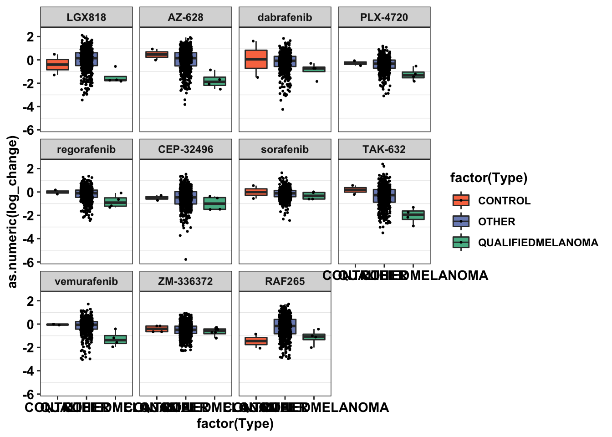
###The cell lines shown here are all the CCLE cell lines tested by braf inhibitors. ALKATI-like Cell lines that we tested are all co-expressing BRAF mutations, so they are, of course, more sensitive to raf inhibitors. Except IPC28 which is an NRAS mutant. Next, I'm going to subset these cell lines by mutational status. Turns out there are 555 cell lines that are targeted by BRAF inhibitors and 111 cell lines that are BRAF or NRAS positive AND are targeted by BRAF inhibitors.
#########Getting Mutational Status Metadata for all cell lines##########
ccle_mutations=read.table("data/depmap_alkati/Data_Raw/CCLE/CCLE_DepMap_18q3_maf_20180718.txt",sep = "\t" ,header = T,stringsAsFactors = F)
######Really need to look at whether these 4 gene names aree okay
ccle_mutations_braf=ccle_mutations%>%filter(Hugo_Symbol%in%c("BRAF","NRAS","RAF","RAS"),Variant_Classification=="Missense_Mutation")
ccle_mutations_braf_simple=ccle_mutations_braf%>%dplyr::select(Hugo_Symbol,Broad_ID)
primary_braf_annotated=merge(primary_braf_t_melt,ccle_mutations_braf_simple,by.x="CellLine",by.y="Broad_ID",all.x = T)
primary_braf_annotated=primary_braf_annotated%>%
mutate(Type_combined=case_when(
Type%in%"QUALIFIEDMELANOMA"~"ALKATI-Like",
Type%in%"CONTROL"~"ALK-Fusion",
Hugo_Symbol%in%c("BRAF")~"BRAF-Mutant",
Hugo_Symbol%in%c("NRAS")~"NRAS-Mutant",
TRUE~"OTHER"
))
primary_braf_annotated$Type_combined=factor(primary_braf_annotated$Type_combined,levels=c("ALK-Fusion","NRAS-Mutant","BRAF-Mutant","ALKATI-Like","OTHER"))
ggplot(primary_braf_annotated,aes(x=factor(Type_combined),y=as.numeric(log_change),fill=factor(Type_combined)))+
geom_boxplot(outlier.shape = NA,aes(fill=Type_combined))+
geom_jitter(width=.2,size=0.4)+
facet_wrap(~drug)+
cleanupWarning: Removed 154 rows containing non-finite values (stat_boxplot).Warning: Removed 154 rows containing missing values (geom_point).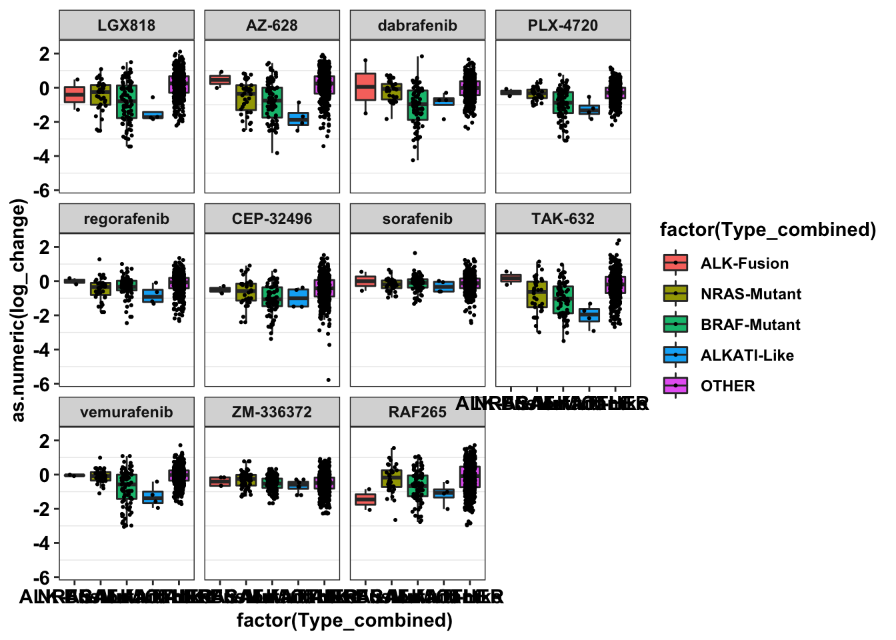
ggplot(primary_braf_annotated%>%filter(Type_combined%in%c("OTHER","BRAF-Mutant","ALKATI-Like")),aes(x=factor(Type_combined),y=as.numeric(log_change),fill=factor(Type_combined)))+
geom_boxplot(outlier.shape = NA,aes(fill=Type_combined))+
geom_jitter(width=.2,size=0.4)+
facet_wrap(~drug)+
scale_y_continuous(name="Log Change",limits=c(-4,2))+
scale_x_discrete(name=element_blank(),
labels=element_blank())+
cleanup+
scale_fill_manual(values=c("#F97850","#57B894","#7B8DBF"))+
labs(fill="Mutation Type")+
theme(axis.ticks.x = element_blank())Warning: Removed 144 rows containing non-finite values (stat_boxplot).Warning: Removed 144 rows containing missing values (geom_point).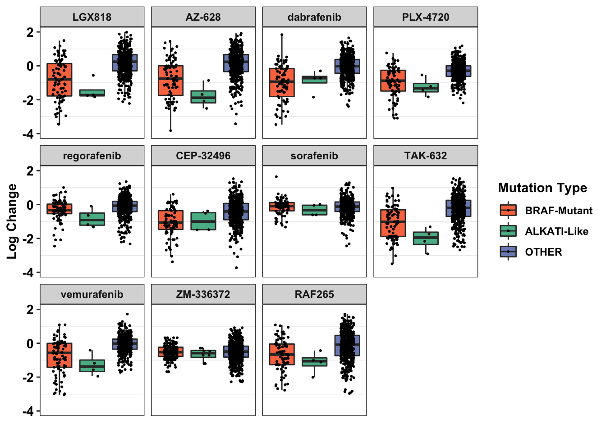
ggplot(primary_braf_annotated%>%filter(Type_combined%in%c("BRAF-Mutant","ALKATI-Like")),aes(x=factor(Type_combined),y=as.numeric(log_change),fill=factor(Type_combined)))+
geom_boxplot(outlier.shape = NA,aes(fill=Type_combined))+
geom_jitter(width=.2,size=0.4)+
facet_wrap(~drug)+
scale_y_continuous(name="Log Change",limits=c(-4,2))+
# scale_x_discrete(name=element_blank())+
cleanup+
scale_fill_manual(values=c("#F97850","#57B894"))+
labs(fill="Mutation Type")+
theme(legend.position = "none",
axis.ticks.x=element_blank(),
axis.title.x=element_blank(),
axis.text.x = element_blank())Warning: Removed 22 rows containing non-finite values (stat_boxplot).Warning: Removed 22 rows containing missing values (geom_point).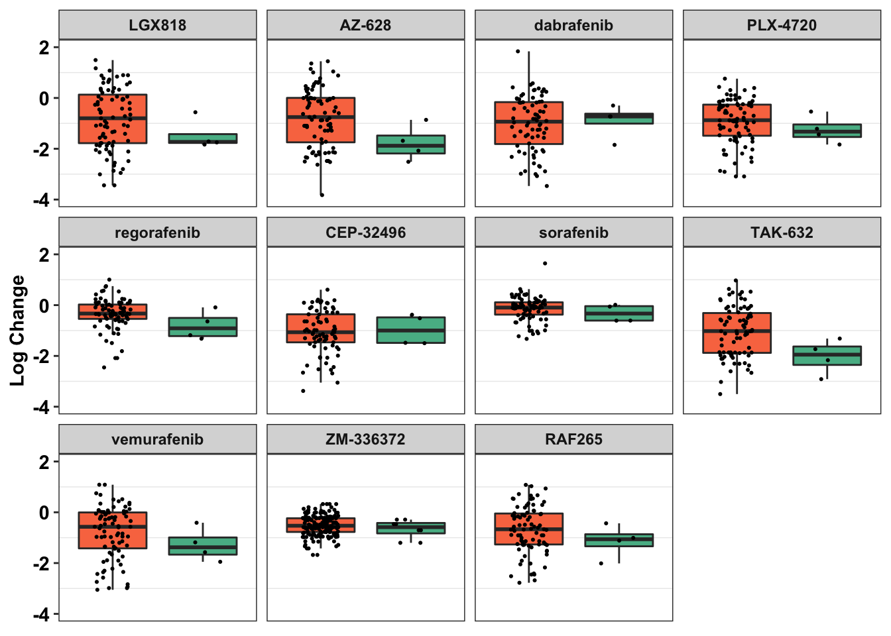
# ggsave("vemurafenib_ccle_multiple.pdf",width=6,height=4,units = "in",useDingbats=F)
ggplot(primary_braf_annotated%>%filter(drug%in%"vemurafenib",Type_combined%in%c("BRAF-Mutant","ALKATI-Like")),aes(x=factor(Type_combined),y=as.numeric(log_change),fill=factor(Type_combined)))+
geom_boxplot(outlier.shape = NA,aes(fill=Type_combined))+
geom_jitter(width=.2,size=0.4)+
scale_y_continuous(name="Log Change")+
scale_x_discrete(name=element_blank())+
cleanup+
scale_fill_manual(values=c("#F97850","#57B894"))+
labs(fill="Mutation Type")+
theme(axis.ticks.x = element_blank(),
legend.position = "none")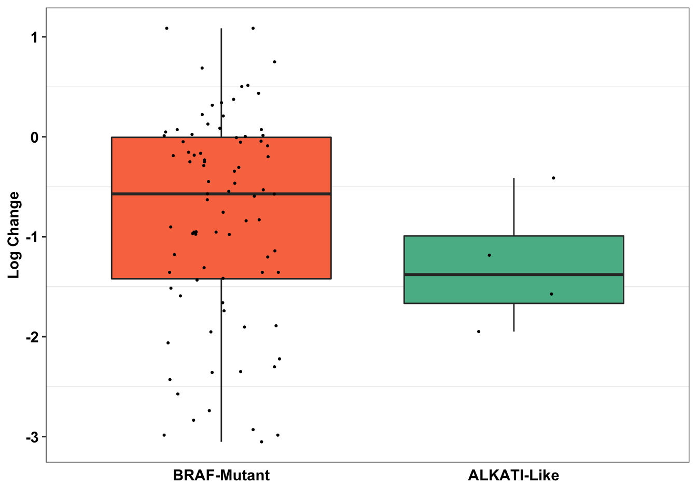
# ggsave("vemurafenib_ccle.pdf",width=3,height=3,units = "in",useDingbats=F)#####In this next section, I'm going to add the ALK expression ranks for each cell line using df_dependency.####
####Note that this is not going in the final figures because it is too much information in one figure###
# Since df_dependency has cell line names (SUPM2), and not the ACH-numbers (like ACH-00723), I'm gonna add the ACH numbers from df_drug all
df_dependency=read.csv("data/depmap_alkati/Data_Processed/df_dependency_edited.csv",header = T,stringsAsFactors = F)
df_dependency$Name=sub("_.*","",df_dependency$Name) #Instead of SUPM2_SKIN_WHATEVER, just grab SUPM2
df_dependency=merge(df_dependency,df_drug_all%>%dplyr::select(Name,Cell_Line),by="Name")
primary_braf_annotated=merge(primary_braf_annotated,df_dependency%>%dplyr::select(!Type),by.x="CellLine",by.y="Cell_Line")
primary_braf_annotated=primary_braf_annotated%>%mutate(log_change=as.numeric(log_change))
ggplot(primary_braf_annotated%>%filter(Type_combined%in%c("BRAF-Mutant","ALKATI-Like"),drug%in%c("vemurafenib")),aes(x=PSI_RATIO,y=RPKM,size=10^(log_change)))+
geom_point(color="black",shape=21,aes(fill=Type_combined))+
facet_wrap(~drug)+
cleanup+
scale_x_continuous(trans="log10")+
scale_y_continuous(trans="log10",limits=c(.1,5))Warning: Transformation introduced infinite values in continuous x-axisWarning: Removed 12 rows containing missing values (geom_point).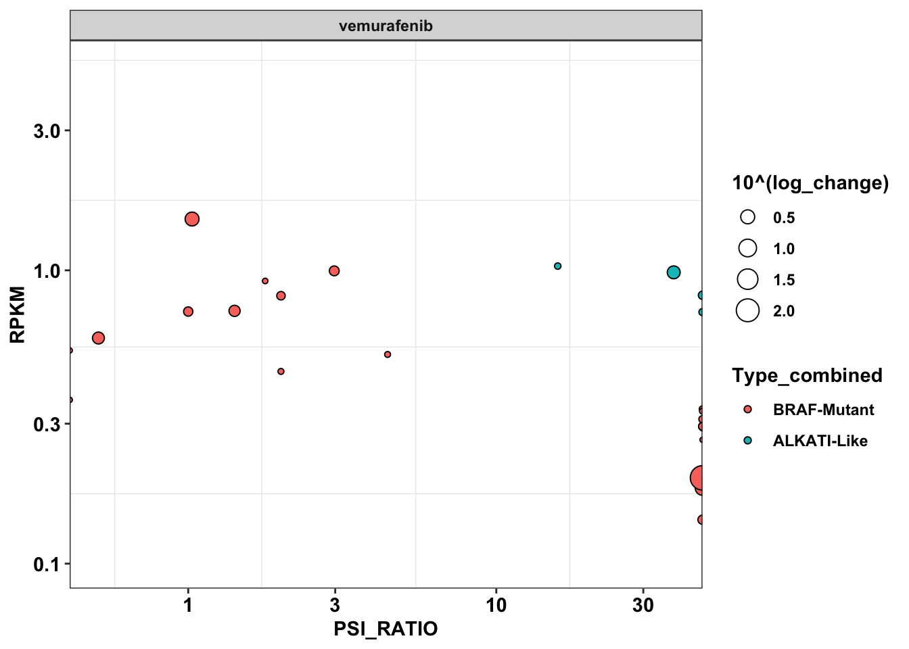
#####Performing multiple regression#####
primary_braf_annotated$PSI_RATIO_UPDATED=primary_braf_annotated$PSI_RATIO
primary_braf_annotated$PSI_RATIO_UPDATED[primary_braf_annotated$PSI_RATIO_UPDATED==Inf]=100
primary_braf_annotated_lm=primary_braf_annotated%>%
filter(!Type%in%"CONTROL")%>%
group_by(drug)%>%
do({model=lm(log_change~PSI_RATIO_UPDATED+RSEM,data=.)
data.frame(tidy(model),
glance(model))})
primary_braf_annotated_lm=primary_braf_annotated_lm%>%
# filter(!term%in%"RSEM")%>%
mutate(pval=pt(statistic,df.residual,lower=F))
primary_braf_annotated_lm_clean=primary_braf_annotated_lm%>%select(drug,term,pval)
primary_braf_annotated_lm_clean%>%filter(term%in%"PSI_RATIO_UPDATED")# A tibble: 12 x 3
# Groups: drug [12]
drug term pval
<fct> <chr> <dbl>
1 LGX818 PSI_RATIO_UPDATED 0.642
2 AZ-628 PSI_RATIO_UPDATED 0.523
3 dabrafenib PSI_RATIO_UPDATED 0.301
4 PLX-4720 PSI_RATIO_UPDATED 0.449
5 regorafenib PSI_RATIO_UPDATED 0.532
6 CEP-32496 PSI_RATIO_UPDATED 0.0378
7 sorafenib PSI_RATIO_UPDATED 0.952
8 TAK-632 PSI_RATIO_UPDATED 0.358
9 vemurafenib PSI_RATIO_UPDATED 0.387
10 ZM-336372 PSI_RATIO_UPDATED 0.845
11 ZM-336372 PSI_RATIO_UPDATED 0.845
12 RAF265 PSI_RATIO_UPDATED 0.313 ###ALK-Inhibitor Analysis: ###Essentially checking if ALKATI-like melanoma cell lines are more sensitive to ALK-inhibitors than other melanoma. Another way of asking if ALKATI-like melanoma can actually be targeted in the clinic Plotting dependency scores
plotly=ggplot(data=df_dependency,aes(y=Score,x=factor(Type)))+geom_point(position = position_dodge(width = 1))+cleanup
ggplotly(plotly)ggplot(data=df_dependency,aes(x=PSI_RATIO,y=RPKM,color=factor(Type),size=Score))+
geom_point()+
cleanupWarning: Removed 23 rows containing missing values (geom_point).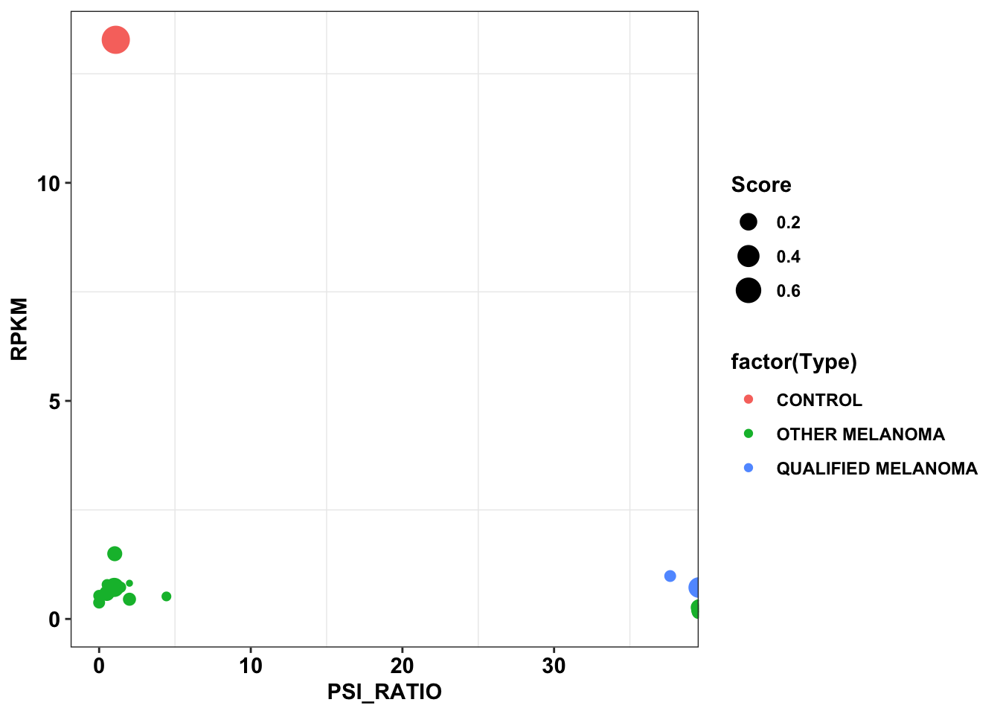
ggplot(data=df_dependency,aes(x=PSI_RATIO,y=RPKM,color=factor(Type),size=Score))+
geom_point()+
scale_x_continuous(trans = "log10")+
cleanupWarning: Transformation introduced infinite values in continuous x-axis
Warning: Removed 23 rows containing missing values (geom_point).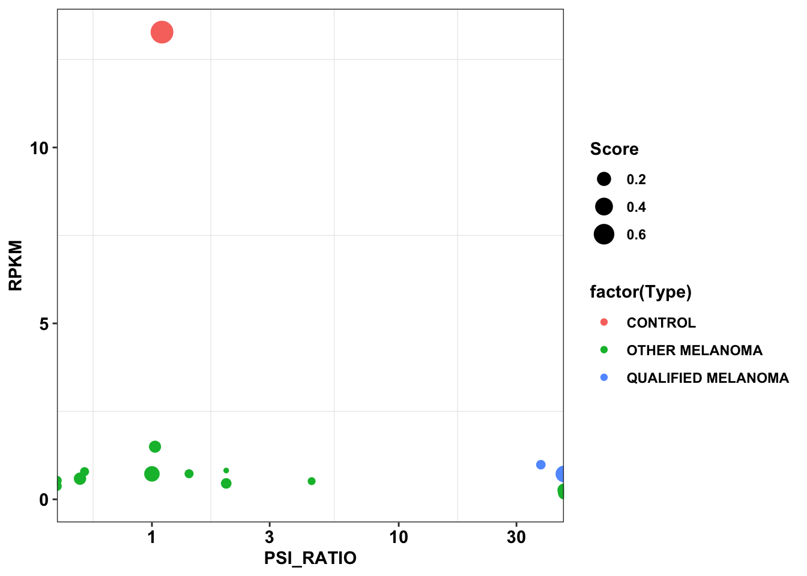
Plotting dose responses
#In the first part, I am making a master dataframe. This will contain the RSEM, RPKM etc for all cell lines, as well as their dependency score and their drug score.
#The dataframe with the drug log change values was in a wide format so I converted it into a long format with melt. The drug names in this df aslo needed to be converted to real names.
df_drug_all_melt=melt(df_drug_all,id.vars = c("X","Cell_Line","Name","Type"),variable.name = "Drug",value.name = "log_change")
# b=df_drug_info
# b$short_name=substr(b$column_name,5,13)
# b=b[,c(4,13)]
#
# a=df_drug_all_melt
# a$short_name=substr(a$Drug,5,13)
# c=merge(a,b,by="short_name")
###Now merging the expression data for all cell lines into the drug response data. We have expression, dependency data for 57 cell lines but dose response data for only 42. However, only 33 out of the 57 cell lines gave us adequate PSI ratios. One idea that I have is to look at the 56 cosmic cell lines that we had full scores on and merge them into the different drugs dataframe.
df_dependency=df_dependency%>%
mutate(Name=sapply(strsplit(Name,split="_"),'[',1))
#For the df dependency without the eml4alk controls, this is the
# b=b%>%
# mutate(Name=sapply(strsplit(X,split="_"),'[',1))
df_drug_alkexp_combined=merge(df_drug_all_melt,df_dependency,by="Name")
#Now I will add name of drug to this new dataframe
df_drug_alkexp_combined$short_name=substr(df_drug_alkexp_combined$Drug,5,13)
d=df_drug_info
d$short_name=substr(d$column_name,5,13)
d=d[,c(4,13)]
df_drug_alkexp_combined=merge(df_drug_alkexp_combined,d,by="short_name")
#Converting log change to fold change
df_drug_alkexp_combined=df_drug_alkexp_combined%>%
mutate(fold_change=exp(log_change))
#Removing the replicates of lorlatinib and brigatinib
df_drug_alkexp_combined=df_drug_alkexp_combined%>%filter(!name%in%c("ASP3026","PF-06463922"))
#Removing NAs in PSI_RATIO. NAs are when PSI ratio for everything is 0.
df_drug_alkexp_combined=df_drug_alkexp_combined%>%filter(!PSI_RATIO%in%NA)
#Now I will make a plot
ggplot(df_drug_alkexp_combined,aes(x=PSI_RATIO,y=RPKM,size=fold_change,color=Type.y))+
geom_point()+
facet_wrap(~factor(name))+
cleanupWarning: Removed 2 rows containing missing values (geom_point).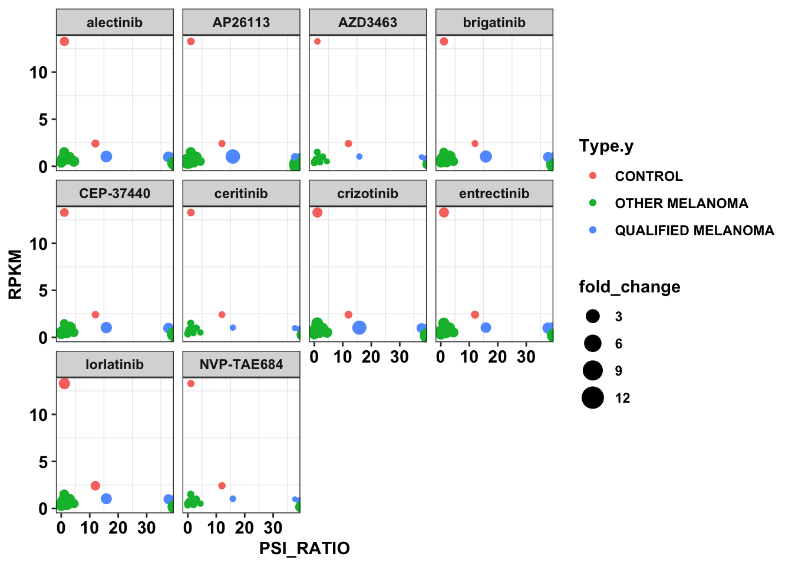
#Plotting fold change
plotly=ggplot(df_drug_alkexp_combined,aes(x=PSI_RATIO,y=RPKM,size=fold_change,color=Type.y))+
geom_point()+
facet_wrap(~factor(name))+
scale_x_continuous(trans="log10")+
# scale_size_continuous(range = c(1, 10))+
# scale_y_continuous(trans="log10")+
cleanup
#Plotting log fold change
ggplotly(plotly)Warning: Transformation introduced infinite values in continuous x-axisplotly=ggplot(df_drug_alkexp_combined,aes(x=PSI_RATIO,y=RPKM,size=log_change,color=Type.y))+
geom_point()+
facet_wrap(~factor(name))+
scale_x_continuous(trans="log10")+
scale_size_continuous(range = c(1, 3))+
scale_y_continuous(trans="log10",limits = c(.3,50))+
cleanup
ggplotly(plotly)Warning: Transformation introduced infinite values in continuous x-axis#Lets just start with one drug:
Entrektinib=df_drug_all_melt%>%
filter(Drug=="BRD.A23124853.001.01.4..2.5..MTS004")
ggplot(data=Entrektinib,aes(y=log_change,x=Name))+geom_col(aes(fill=Type))+cleanup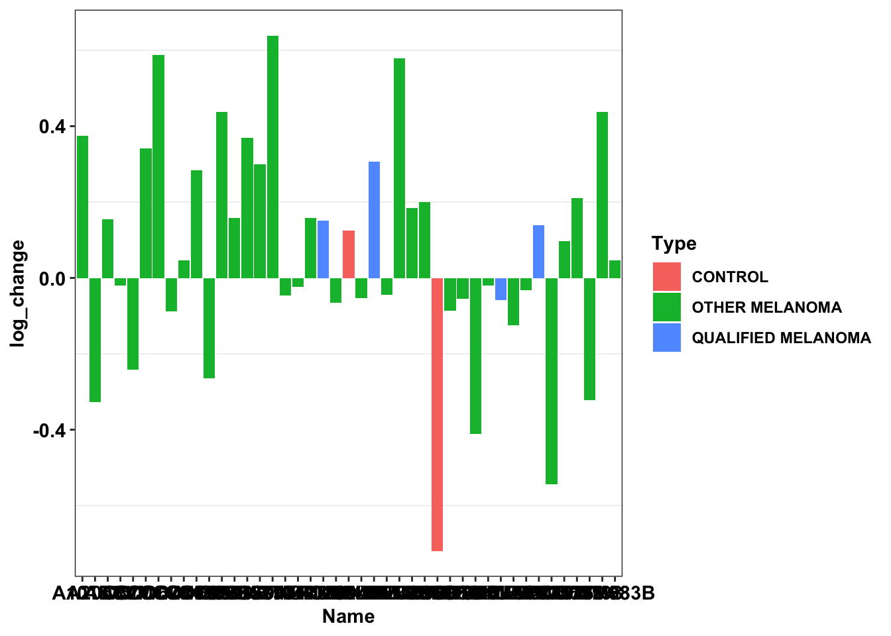
#Other idea: facet wrap by Type(classification)
#Now to plot all:
ggplot(data=df_drug_all_melt,aes(y=log_change,x=Name))+geom_col(aes(fill=Type))+facet_wrap(~Drug)Warning: Removed 6 rows containing missing values (position_stack).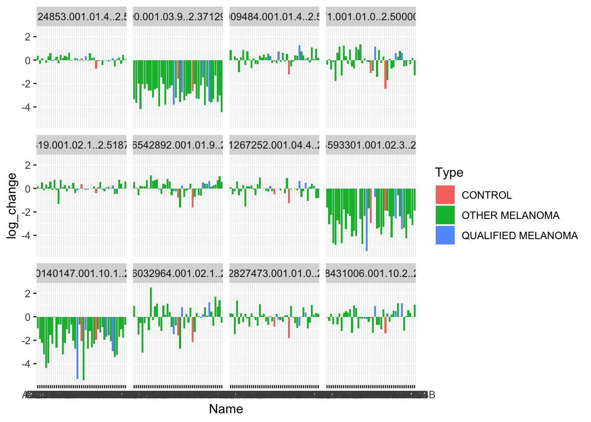
ggplot(data=df_drug_all_melt,aes(y=log_change))+
geom_boxplot(aes(fill=Type))+
facet_wrap(~Drug)+
cleanupWarning: Removed 6 rows containing non-finite values (stat_boxplot).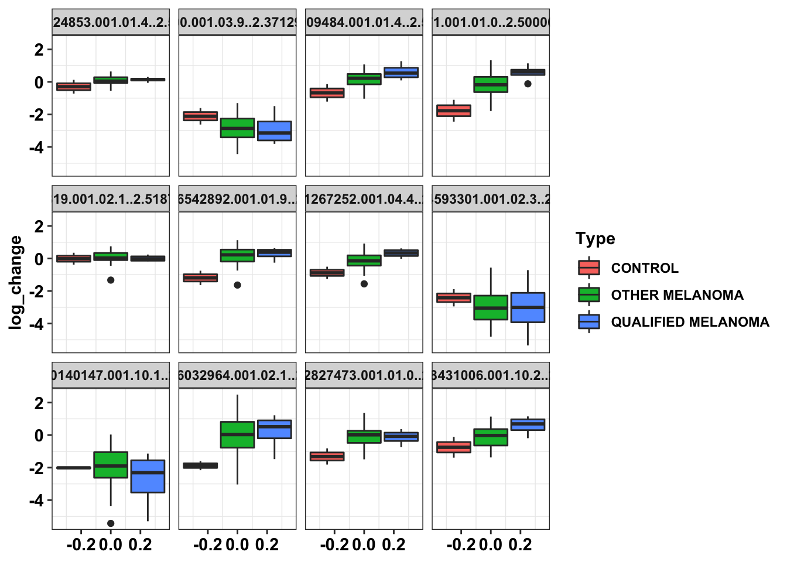
ggplot(data=df_drug_alkexp_combined[df_drug_alkexp_combined$name%in%"lorlatinib",],aes(y=log_change))+
geom_boxplot(aes(fill=Type.x))+
facet_wrap(~name)+
cleanup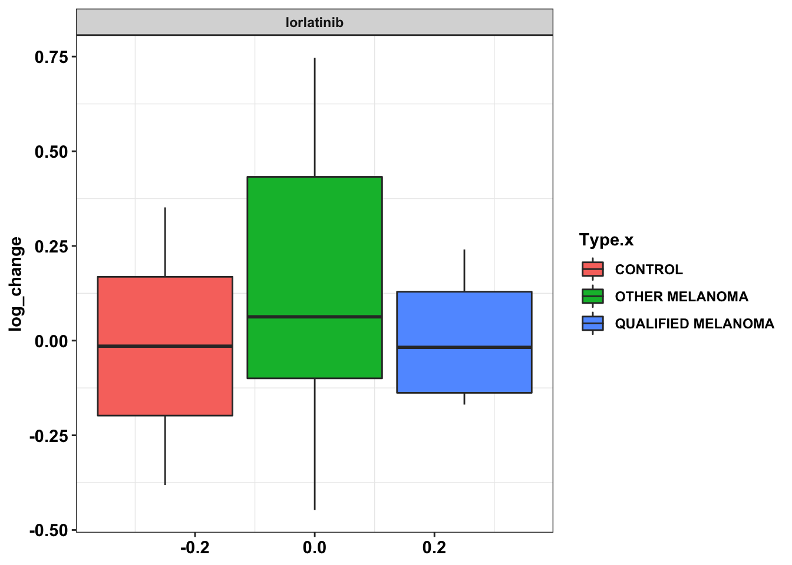
#Next steps: 1) Maybe get a normalized fold-change so that the sizes of the points look a little more uniform. Add the linear model.
#Remove ceritinib, AZD3463, TAE684,
#Other regex to use possibly
# strsplit("aaaa-bbbb",split="-")
# a%>%mutate(sort.unique.df_drug_all_melt.Drug..="a")
# a=a%>%mutate(sort.unique.df_drug_all_melt.Drug..=strsplit())
#
# strsplit("aaaa-bbbb","-")
# gsub("-","",a$sort.unique.df_drug_all_melt.Drug..)
# substr(a$sort.unique.df_drug_all_melt.Drug..,5,13)
# grep("-","aaaa-b-bbb")
#Making sure that the two drugs with the same name are actually the same.
#Plotting the two Brigatinib data
df_drug_alkexp_combined_brig=df_drug_alkexp_combined%>%filter(name%in%c("brigatinib","ASP3026"))
ggplot(df_drug_alkexp_combined_brig,aes(x=PSI_RATIO,y=RPKM,size=fold_change,color=Type.y))+
geom_point()+
facet_wrap(~factor(name))+
scale_x_continuous(trans="log10")+
scale_size_continuous(range = c(1, 10))+
# scale_y_continuous(trans="log10")+
cleanupWarning: Transformation introduced infinite values in continuous x-axis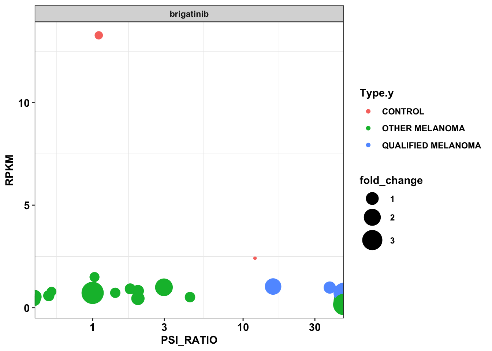
df_drug_alkexp_combined_lor=df_drug_alkexp_combined%>%filter(name%in%c("lorlatinib","PF-06463922"))
ggplot(df_drug_alkexp_combined_lor,aes(x=PSI_RATIO,y=RPKM,size=fold_change,color=Type.y))+
geom_point()+
facet_wrap(~factor(name))+
scale_x_continuous(trans="log10")+
cleanupWarning: Transformation introduced infinite values in continuous x-axis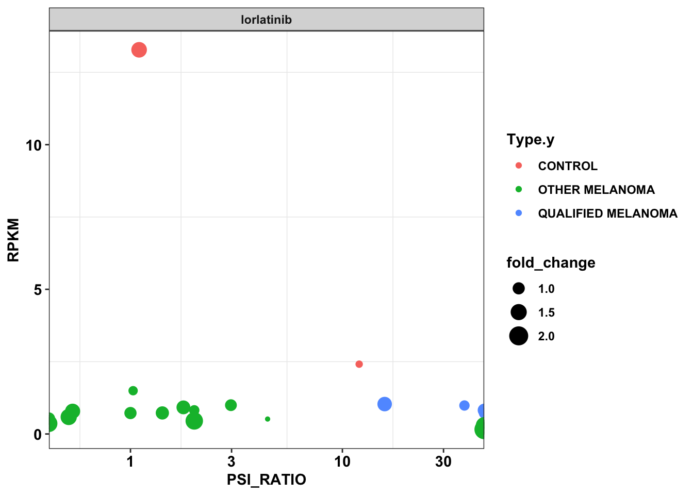
#Adding the linear model.
###Start with linear model for Just entrektinib
#Notice how the p-value goes from significant to not significant if you exclude EML4ALK controls
df_drug_alkexp_combined_entrectinib=df_drug_alkexp_combined%>%filter(name=="entrectinib")
#Replacing inf PSI ratios with 100
df_drug_alkexp_combined_entrectinib$PSI_RATIO_UPDATED=df_drug_alkexp_combined_entrectinib$PSI_RATIO
df_drug_alkexp_combined_entrectinib$PSI_RATIO_UPDATED[df_drug_alkexp_combined_entrectinib$PSI_RATIO_UPDATED==Inf]=100
df_drug_alkexp_combined_lm=lm(log_change~PSI_RATIO_UPDATED+RPKM,data = df_drug_alkexp_combined_entrectinib)
summary(df_drug_alkexp_combined_lm)
Call:
lm(formula = log_change ~ PSI_RATIO_UPDATED + RPKM, data = df_drug_alkexp_combined_entrectinib)
Residuals:
Min 1Q Median 3Q Max
-1.32210 -0.28582 0.01418 0.21745 0.86049
Coefficients:
Estimate Std. Error t value Pr(>|t|)
(Intercept) 0.126108 0.126806 0.994 0.3288
PSI_RATIO_UPDATED 0.004204 0.001755 2.396 0.0238 *
RPKM -0.029162 0.036017 -0.810 0.4252
---
Signif. codes: 0 '***' 0.001 '**' 0.01 '*' 0.05 '.' 0.1 ' ' 1
Residual standard error: 0.44 on 27 degrees of freedom
Multiple R-squared: 0.23, Adjusted R-squared: 0.1729
F-statistic: 4.032 on 2 and 27 DF, p-value: 0.02936#Repeating entrectinib analysis without the fusion lines
df_drug_alkexp_combined_entrectinib=df_drug_alkexp_combined%>%filter(name=="entrectinib")%>%
filter(!Type.y=="CONTROL")
#Replacing inf PSI ratios with 100
df_drug_alkexp_combined_entrectinib$PSI_RATIO_UPDATED=df_drug_alkexp_combined_entrectinib$PSI_RATIO
df_drug_alkexp_combined_entrectinib$PSI_RATIO_UPDATED[df_drug_alkexp_combined_entrectinib$PSI_RATIO_UPDATED==Inf]=100
df_drug_alkexp_combined_lm=lm(log_change~PSI_RATIO_UPDATED+RPKM,data = df_drug_alkexp_combined_entrectinib)
df_drug_alkexp_combinedsum=summary(df_drug_alkexp_combined_lm)
df_drug_alkexp_combinedsum$coefficients[,4][1](Intercept)
0.6351053 ##All drugs linear model. Will use group by and summarize
#Replacing inf PSI ratios with 100
df_drug_alkexp_combined_trial=df_drug_alkexp_combined
#Optional: remove positive control cell lines
df_drug_alkexp_combined_trial=df_drug_alkexp_combined%>%filter(!Type.y=="CONTROL")
##
df_drug_alkexp_combined_trial$PSI_RATIO_UPDATED=df_drug_alkexp_combined_trial$PSI_RATIO
# c_trial$PSI_RATIO_UPDATED[c_trial$PSI_RATIO_UPDATED==Inf]=100
df_drug_alkexp_combined_trial$PSI_RATIO_UPDATED[df_drug_alkexp_combined_trial$PSI_RATIO_UPDATED==Inf]=NA
df_drug_alkexp_combined_lmsum=df_drug_alkexp_combined_trial%>%
group_by(name)%>%
summarize(intercept_pval=summary(lm(log_change~PSI_RATIO_UPDATED+RPKM))$coefficients[,4][1],psi_ratio_pval=summary(lm(log_change~PSI_RATIO_UPDATED+RPKM))$coefficients[,4][2],rpkm_ratio_pval=summary(lm(log_change~PSI_RATIO_UPDATED+RPKM))$coefficients[,4][3])
#This function was taken from here:https://stackoverflow.com/questions/5587676/pull-out-p-values-and-r-squared-from-a-linear-regression
lmp <- function (modelobject) {
if (class(modelobject) != "lm") stop("Not an object of class 'lm' ")
f <- summary(modelobject)$fstatistic
p <- pf(f[1],f[2],f[3],lower.tail=F)
attributes(p) <- NULL
return(p)
}
df_drug_alkexp_combined_lmsum=df_drug_alkexp_combined_trial%>%
group_by(name)%>%
summarize(P_val=lmp(lm(log_change~PSI_RATIO_UPDATED+RPKM)))
#Regressing just based on the PSI ratio
df_drug_alkexp_combined_lmsum=df_drug_alkexp_combined_trial%>%
group_by(name)%>%
summarize(P_val=lmp(lm(log_change~PSI_RATIO_UPDATED+RPKM,na.action=na.omit)))
#Please note that we would expect the EML4ALK to make all the models more significant. However, this does not happen. Therefore, I would advise caution when interpreting these models. One potential source of error is that the log_change is either a negative or positive numberGenerating final figurs for paper
#Boxplots:
# df_drug_alkexp_combined=df_drug_alkexp_combined%>%filter(!name%in%c("AZD3463","ceritinib","lorlatinib","NVP-TAE684"))
#Removing ceritinib and AZD3463 because the sensitivity for all cell lines for those drugs seemed to be extremely low...
df_drug_alkexp_combined=df_drug_alkexp_combined%>%filter(!name%in%c("AZD3463","ceritinib"))
df_drug_alkexp_combined$SumRPKM=df_drug_alkexp_combined$RPKM*30
df_drug_alkexp_combined$Type.y[df_drug_alkexp_combined$Name=="KELLY"]="KELLY-ALKF1174L"
df_drug_alkexp_combined$Type.y[df_drug_alkexp_combined$Name=="NCIH2228"]="NCIH2228-EML4ALK"
df_drug_alkexp_combined$Type.y[df_drug_alkexp_combined$Type.y=="OTHER MELANOMA"]="Not ALKATI-Like"
df_drug_alkexp_combined$Type.y[df_drug_alkexp_combined$Type.y=="QUALIFIED MELANOMA"]="ALKATI-Like"
ggplot(data=df_drug_alkexp_combined,aes(x=factor(Type.x),y=log_change))+
geom_boxplot(outlier.shape = NA,aes(fill=Type.x))+
geom_jitter(width=.2,size=0.4)+
facet_wrap(~name)+
scale_fill_manual(values=c("#F97850","#7B8DBF","#57B894"))+
scale_y_continuous(limits = c(-2,2),
name="Log Change")+
cleanup+
theme(plot.title = element_text(hjust=.5),
text = element_text(size=10,face="bold"),
axis.title = element_text(face="bold",size="10",color="black"),
axis.text=element_text(face="bold",size="10",color="black"),
axis.text.x = element_blank(),
axis.title.x = element_blank(),
axis.ticks.x = element_blank(),
legend.position = "none")+
labs(fill="Mutation Type")Warning: Removed 19 rows containing non-finite values (stat_boxplot).Warning: Removed 19 rows containing missing values (geom_point).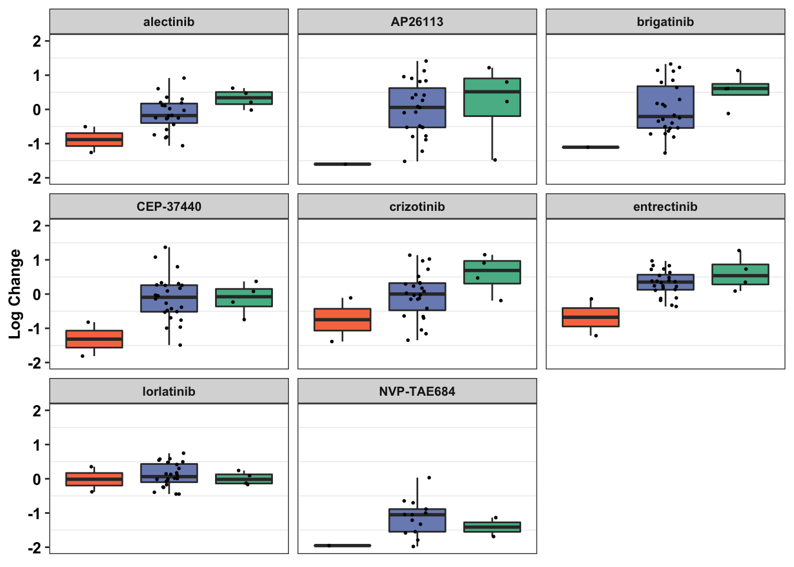
ggsave("crizotinib_ccle.pdf",width=6,height=4,units = "in",useDingbats=F)Warning: Removed 19 rows containing non-finite values (stat_boxplot).
Warning: Removed 19 rows containing missing values (geom_point).ggplot(data=df_drug_alkexp_combined%>%filter(name%in%"crizotinib"),aes(x=factor(Type.x),y=log_change))+
geom_boxplot(outlier.shape = NA,aes(fill=Type.x))+
geom_jitter(width=.2,size=0.4)+
# facet_wrap(~name)+
scale_fill_manual(values=c("#F97850","#7B8DBF","#57B894"))+
scale_y_continuous(limits = c(-2,2))+
cleanup+
theme(plot.title = element_text(hjust=.5),
text = element_text(size=10,face="bold"),
axis.title = element_text(face="bold",size="10",color="black"),
axis.text=element_text(face="bold",size="10",color="black"),
# axis.text.x = element_blank(),
axis.ticks.x = element_blank(),
axis.title.x = element_blank(),
legend.position = "none")+
labs(fill="Mutation Type")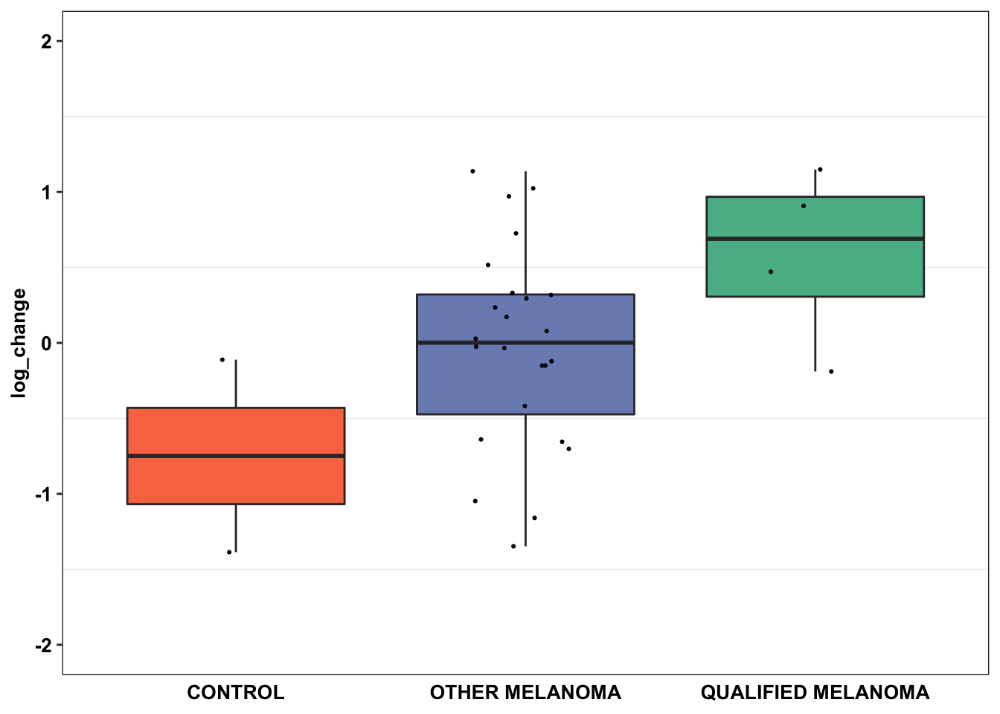
# ggsave("crizotinib_ccle_single.pdf",width=3,height=2.5,units = "in",useDingbats=F)
# ggsave("alkati_ccle_boxplot.pdf",width = 3,height = 3,units = "in",useDingbats=F)
# sort(unique(c$Cell_Line))
# sort(unique(df_drug_all_melt$Cell_Line))
ggplot(df_drug_alkexp_combined,aes(x=PSI_RATIO,y=SumRPKM,size=log_change))+
geom_point(color="black",shape=21,aes(fill=Type.y))+
facet_wrap(~factor(name))+
# scale_size_continuous(range = c(1, 6))+
scale_fill_manual(values=c("#57B894","#F97850","#DF72B6","#7B8DBF"))+
scale_y_continuous(trans="log10",name="Total RPKM")+
scale_x_continuous(trans="log10",name = "Ratio ALK Ex20-29 to Ex1-19")+
cleanup+
theme(plot.title = element_text(hjust=.5),
text = element_text(size=10,face="bold"),
axis.title = element_text(face="bold",size="10",color="black"),
axis.text=element_text(face="bold",size="10",color="black"),
legend.position = "off")Warning: Transformation introduced infinite values in continuous x-axisWarning: Removed 2 rows containing missing values (geom_point).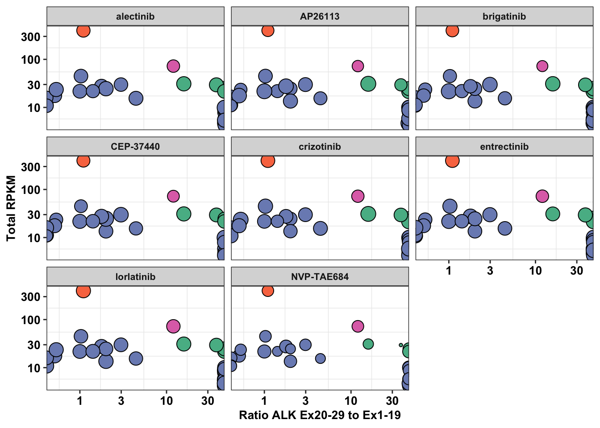
# ggsave("crizotinib_ccle_option2.pdf",width=6,height=4,units = "in",useDingbats=F)
# sort(unique(aa$Name))
# aa=c%>%filter(Type.x=="QUALIFIED MELANOMA")
ggplot(df_drug_alkexp_combined%>%filter(name%in%"crizotinib"),aes(x=PSI_RATIO,y=SumRPKM,size=log_change))+
geom_point(color="black",shape=21,aes(fill=Type.y))+
# facet_wrap(~factor(name))+
# scale_size_continuous(range = c(1, 6))+
scale_fill_manual(values=c("#57B894","#F97850","#DF72B6","#7B8DBF"))+
scale_y_continuous(trans="log10",name="Total RPKM")+
scale_x_continuous(trans="log10",name = "Ratio ALK Ex20-29 to Ex1-19")+
cleanup+
theme(plot.title = element_text(hjust=.5),
text = element_text(size=10,face="bold"),
axis.title = element_text(face="bold",size="10",color="black"),
axis.text=element_text(face="bold",size="10",color="black"),
legend.position = "off")Warning: Transformation introduced infinite values in continuous x-axis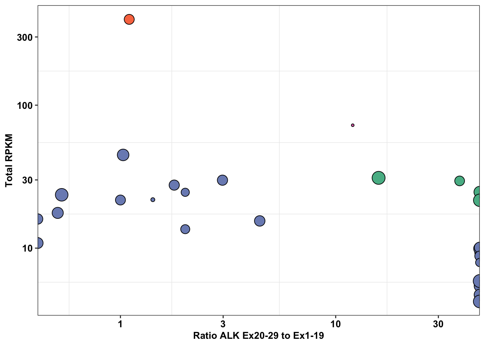
# ggsave("crizotinib_ccle_single.pdf",width=3,height=2.5,units = "in",useDingbats=F)
# ggsave("alkati_ccle.pdf",width = 4,height = 3,units = "in",useDingbats=F)
#Things to do to improve this figure: Name the controls either EML4ALK or ALK1174C, color according to figure color scheme, add total RPKM instead of RPKM, break y-axis to encompass the 1174C cell line with very high values, replace the log_change with a normalized version so that all the points look the same between different drugs, rename PSI-ratio to say Exon Imbalance instead, the inf points should be inside the plot, Maybe consider plotting ALK count on the y-axis instead of RPKM
#####Performing multiple regression#####
###Basically checking if ALKATI-like filters (higher PSI-ratio, ALK RSEM, ALK Read Count) confer sensitivity to ALK-inhibitors, lowering the log ratio from a more positive number to a more negative number.
####One-sided: does PSI ratio, RSEM, READ count reduce log change? i.e. when predicting log change with these 3 variables, is the slope negative? H0:B1>=0, H1: B1<0.
#Replacing inf PSI ratios with 100
df_drug_alkexp_combined$PSI_RATIO_UPDATED=df_drug_alkexp_combined$PSI_RATIO
df_drug_alkexp_combined$PSI_RATIO_UPDATED[df_drug_alkexp_combined$PSI_RATIO_UPDATED==Inf]=100
# Code for getting one sided p-vals with linear models in R: https://stats.stackexchange.com/questions/325354/if-and-how-to-use-one-tailed-testing-in-multiple-regression
mod=lm(log_change~PSI_RATIO_UPDATED+RSEM,df_drug_alkexp_combined_entrectinib)
res=summary(mod)
# For the two-sided hypotheses
2*pt(-abs(coef(res)[, 3]), mod$df) (Intercept) PSI_RATIO_UPDATED RSEM
0.86443094 0.02129968 0.49600957 # For H1: beta < 0
pt(coef(res)[, 3], mod$df, lower = TRUE) (Intercept) PSI_RATIO_UPDATED RSEM
0.5677845 0.9893502 0.7519952 # i.e. p-value of 0.99
# Code to summarize linear models into dataframes using broom and dplyr is here https://stackoverflow.com/questions/32274779/extracting-p-values-from-multiple-linear-regression-lm-inside-of-a-ddply-funct/32275739
library("broom")
df_drug_alkexp_combined_lm=df_drug_alkexp_combined%>%
filter(!Type.x%in%"CONTROL")%>%
group_by(name)%>%
do({model=lm(log_change~PSI_RATIO_UPDATED+RSEM,data=.)
data.frame(tidy(model),
glance(model))})
df_drug_alkexp_combined_lm=df_drug_alkexp_combined_lm%>%
# filter(!term%in%"RSEM")%>%
mutate(pval=pt(statistic,df.residual,lower=T))
df_drug_alkexp_combined_lm_clean=df_drug_alkexp_combined_lm%>%select(name,term,pval)
df_drug_alkexp_combined_lm_clean%>%filter(term%in%"PSI_RATIO_UPDATED")# A tibble: 8 x 3
# Groups: name [8]
name term pval
<chr> <chr> <dbl>
1 alectinib PSI_RATIO_UPDATED 0.834
2 AP26113 PSI_RATIO_UPDATED 0.853
3 brigatinib PSI_RATIO_UPDATED 0.923
4 CEP-37440 PSI_RATIO_UPDATED 0.266
5 crizotinib PSI_RATIO_UPDATED 0.933
6 entrectinib PSI_RATIO_UPDATED 0.989
7 lorlatinib PSI_RATIO_UPDATED 0.179
8 NVP-TAE684 PSI_RATIO_UPDATED 0.672df_drug_alkexp_combined_lm_clean%>%filter(term%in%"RSEM") # A tibble: 8 x 3
# Groups: name [8]
name term pval
<chr> <chr> <dbl>
1 alectinib RSEM 0.969
2 AP26113 RSEM 0.687
3 brigatinib RSEM 0.620
4 CEP-37440 RSEM 0.497
5 crizotinib RSEM 0.913
6 entrectinib RSEM 0.752
7 lorlatinib RSEM 0.0475
8 NVP-TAE684 RSEM 0.290 sort(unique(df_drug_alkexp_combined$Cell_Line.y)) [1] "ACH-000008" "ACH-000014" "ACH-000219" "ACH-000259" "ACH-000274"
[6] "ACH-000322" "ACH-000423" "ACH-000425" "ACH-000441" "ACH-000447"
[11] "ACH-000450" "ACH-000477" "ACH-000579" "ACH-000580" "ACH-000582"
[16] "ACH-000614" "ACH-000650" "ACH-000661" "ACH-000730" "ACH-000765"
[21] "ACH-000805" "ACH-000810" "ACH-000814" "ACH-000822" "ACH-000827"
[26] "ACH-000881" "ACH-000882" "ACH-000899" "ACH-000915" "ACH-000968"a=df_drug_alkexp_combined[which(df_drug_alkexp_combined$name%in%"crizotinib"),]
a=df_drug_alkexp_combined%>%filter(Type.x%in%"QUALIFIED MELANOMA",name%in%"crizotinib")
# It looks like for all the drugs, a higher PSI ratio (ALKATI characteristic) does not predict an lower log-ratio (more sensitivity to ALK-inhibitors)####Code Archive####
#Eventually decided not to use the data from RNAsequencing from Ariad. Turns out that we don't really need crownbio pdx data because we aren't studying PDXs here. Duh.
#In this piece of code, I will try to get the exon ratios from the cosmic data rather than just relying on the PSI-ratios. The reason this is a big deal is because one of the two "ALKATI" lines has an inf PSI_ratio.
#Found out that the cosmic data and the ccle data has 38 common cell lines
#Note that in the cosmic dataset, we ended up having to use a 'total RPKM figure'. Ideally, we would us an 'average RPKM' metric. Even more ideally, we would use the exact same RPKM filter that Weisner et al used.
ccle_drug=read.csv("data/depmap_alkati/Data_cosmic/CCLE_NP24.2009_Drug_data_2015.02.24.csv",sep=",",header=T,stringsAsFactors=F)
ccle_rpkm=read.csv("data/depmap_alkati/Data_cosmic/ALKATI_ccle.csv", sep=",",header=T, stringsAsFactors=F)
ccleRpkmT=t(ccle_rpkm)
data_mat=data.frame(ccleRpkmT[5:57,])
colnames(data_mat)[1:28]=ccleRpkmT[4,2:29]
data_mat_rpkm=data.frame(cbind(rownames(data_mat),data_mat))
rownames(data_mat_rpkm)=NULL
data_mat_rpkm$rownames.data_mat.=sub("^G[0-9]{5}.([A-Za-z0-9._]*).[0-9].bam","\\1",data_mat_rpkm$rownames.data_mat.)
data_mat_rpkm$rownames.data_mat.=gsub("[_]","",data_mat_rpkm$rownames.data_mat.)
data_mat_rpkm$rownames.data_mat.=gsub("[.]","",data_mat_rpkm$rownames.data_mat.)
data_mat_rpkm$rownames.data_mat.=toupper(data_mat_rpkm$rownames.data_mat.)
for (i in 2:ncol(data_mat_rpkm)){
data_mat_rpkm[,i]=as.numeric(as.character(data_mat_rpkm[,i]))
}
for (i in 2:nrow(data_mat_rpkm)){
data_mat_rpkm[i,31]=sum(data_mat_rpkm[i,2:29])
data_mat_rpkm[i,32]=sum(data_mat_rpkm[i,2:19])/19
data_mat_rpkm[i,33]=sum(data_mat_rpkm[i,20:29])/10
}
colnames(data_mat_rpkm)[31]="SumRPKM"
colnames(data_mat_rpkm)[32]="Avg1_19RPKM"
colnames(data_mat_rpkm)[33]="Avg20_29RPKM"
data_mat_rpkm=data.frame(cbind(data_mat_rpkm,data_mat_rpkm$Avg20_29RPKM/data_mat_rpkm$Avg1_19RPKM))
x=data.frame(data_mat_rpkm[,c(1,30,31,32,33,34)])
x$Name=x$rownames.data_mat.
xx=merge(c,x,by="Name")
#Changing log fold change in dose response to IC50s to simply fold change
#Ideally will do this at the beginning of the code
xx=xx%>%
mutate(fold_change=exp(log_change))
# data_mat_rpkm$meanRPKM=data_mat_rpkm$SumRPKM/30 #Pretty sure X29 is just the sum RPKM
ggplot(xx,aes(x=X29,y=SumRPKM,size=Score,color=Type.y))+
geom_point()+
facet_wrap(~factor(name))+
cleanup
ggplot(xx,aes(x=data_mat_rpkm.Avg20_29RPKM.data_mat_rpkm.Avg1_19RPKM,y=SumRPKM,size=fold_change))+
geom_point()+
facet_wrap(~factor(name))+
scale_x_continuous(trans="log10")+
scale_y_continuous(trans="log10")+
cleanup
ggplot(xx,aes(x=data_mat_rpkm.Avg20_29RPKM.data_mat_rpkm.Avg1_19RPKM,y=RSEM,size=fold_change))+
geom_point()+
facet_wrap(~factor(name))+
scale_x_continuous(trans="log10")+
scale_y_continuous(trans="log10")+
cleanup
#This plot of IC50 vs Exon Imbalance shows that there isn't any relationship
ggplot(xx,aes(x=data_mat_rpkm.Avg20_29RPKM.data_mat_rpkm.Avg1_19RPKM,y=fold_change))+
geom_point()+
facet_wrap(~factor(name))+
scale_x_continuous(trans="log10")+
scale_y_continuous(trans="log10")+
cleanup
#This plot shows that we can use either RPKM or RSEM as they're basically the same metric of expression
ggplot(xx,aes(x=RPKM,y=RSEM))+geom_point()
#This plot shows cosmic's measure of RPKM and CCLE's measure of RPKM are highly correlated
ggplot(xx,aes(x=RPKM,y=SumRPKM))+geom_point()
#The original alkati paper used filters: 10x expression imbalance, >100 RSEM, and >500 count. This plot shows that cell lines are not even close to an expression of 100. This is why we have to end up using an ALKATI-like filter
ggplot(xx,aes(x=RSEM))+geom_histogram()
#This plot shows that there are a good number of cell lines with >500 counts
# ggplot(xx,aes(x=READ_COUNTS))+geom_histogram()
#Now I will do a linear model for all the drugs
# xx_lm=xx[,c(1,5,7,17,20,23,24)]
# #Converting inf to NA
# xx_lm$data_mat_rpkm.Avg20_29RPKM.data_mat_rpkm.Avg1_19RPKM[which(is.infinite(xx_lm$data_mat_rpkm.Avg20_29RPKM.data_mat_rpkm.Avg1_19RPKM))]=NA
# xx_lm_summary=xx_lm%>%
# group_by(Name,Type.x,name)%>%
# summarize(lm_result=lm(log_change~SumRPKM+data_mat_rpkm.Avg20_29RPKM.data_mat_rpkm.Avg1_19RPKM,na.action = na.omit)$df.residual)
# xx_lm_summary=xx_lm%>%
# group_by(Name,Type.x,name)%>%
# summarize(lm_result=log_change+SumRPKM+data_mat_rpkm.Avg20_29RPKM.data_mat_rpkm.Avg1_19RPKM)
#
# lm(log_change~SumRPKM+data_mat_rpkm.Avg20_29RPKM.data_mat_rpkm.Avg1_19RPKM,data=xx_lm,na.action = na.omit)$rank
# lmmodelattempt=summary(lm(log_change~SumRPKM+data_mat_rpkm.Avg20_29RPKM.data_mat_rpkm.Avg1_19RPKM,data=xx_lm,na.action = na.omit))
# lmmodelattempt$coefficients[2]
# lmmodelattempt=lm(log_change~SumRPKM+data_mat_rpkm.Avg20_29RPKM.data_mat_rpkm.Avg1_19RPKM,data=xx_lm,na.action = na.omit)
# lmmodelattempt$df.residual
#
#
# lm(log_change~SumRPKM,data=xx_lm)
# alkati_lm=lm(IC50..uM.~alldata.Avg20_29RPKM.alldata.Avg1_19RPKM+SumRPKM,data = alldata)
#
# summary(alkati_lm)
sessionInfo()R version 4.0.0 (2020-04-24)
Platform: x86_64-apple-darwin17.0 (64-bit)
Running under: macOS 10.16
Matrix products: default
BLAS: /Library/Frameworks/R.framework/Versions/4.0/Resources/lib/libRblas.dylib
LAPACK: /Library/Frameworks/R.framework/Versions/4.0/Resources/lib/libRlapack.dylib
locale:
[1] en_US.UTF-8/en_US.UTF-8/en_US.UTF-8/C/en_US.UTF-8/en_US.UTF-8
attached base packages:
[1] parallel grid stats graphics grDevices utils datasets
[8] methods base
other attached packages:
[1] broom_0.7.0 plotly_4.9.2.1 ggsignif_0.6.0
[4] devtools_2.3.0 usethis_1.6.1 RColorBrewer_1.1-2
[7] reshape2_1.4.4 ggplot2_3.3.2 doParallel_1.0.15
[10] iterators_1.0.12 foreach_1.5.0 dplyr_0.8.5
[13] VennDiagram_1.6.20 futile.logger_1.4.3 tictoc_1.0
[16] knitr_1.28 workflowr_1.6.2
loaded via a namespace (and not attached):
[1] Rcpp_1.0.4.6 tidyr_1.0.3 prettyunits_1.1.1
[4] ps_1.3.3 utf8_1.1.4 assertthat_0.2.1
[7] rprojroot_1.3-2 digest_0.6.25 R6_2.4.1
[10] plyr_1.8.6 futile.options_1.0.1 backports_1.1.7
[13] evaluate_0.14 httr_1.4.1 pillar_1.4.4
[16] rlang_0.4.6 lazyeval_0.2.2 data.table_1.12.8
[19] whisker_0.4 callr_3.4.3 rmarkdown_2.1
[22] labeling_0.3 desc_1.2.0 stringr_1.4.0
[25] htmlwidgets_1.5.1 munsell_0.5.0 compiler_4.0.0
[28] httpuv_1.5.2 xfun_0.13 pkgconfig_2.0.3
[31] pkgbuild_1.0.8 htmltools_0.4.0 tidyselect_1.1.0
[34] tibble_3.0.1 codetools_0.2-16 viridisLite_0.3.0
[37] fansi_0.4.1 crayon_1.3.4 withr_2.2.0
[40] later_1.0.0 jsonlite_1.6.1 gtable_0.3.0
[43] lifecycle_0.2.0 git2r_0.27.1 magrittr_1.5
[46] formatR_1.7 scales_1.1.1 cli_2.0.2
[49] stringi_1.4.6 farver_2.0.3 fs_1.4.1
[52] promises_1.1.0 remotes_2.1.1 testthat_2.3.2
[55] generics_0.0.2 ellipsis_0.3.1 vctrs_0.3.0
[58] lambda.r_1.2.4 tools_4.0.0 glue_1.4.1
[61] purrr_0.3.4 crosstalk_1.1.0.1 processx_3.4.2
[64] pkgload_1.0.2 yaml_2.2.1 colorspace_1.4-1
[67] sessioninfo_1.1.1 memoise_1.1.0